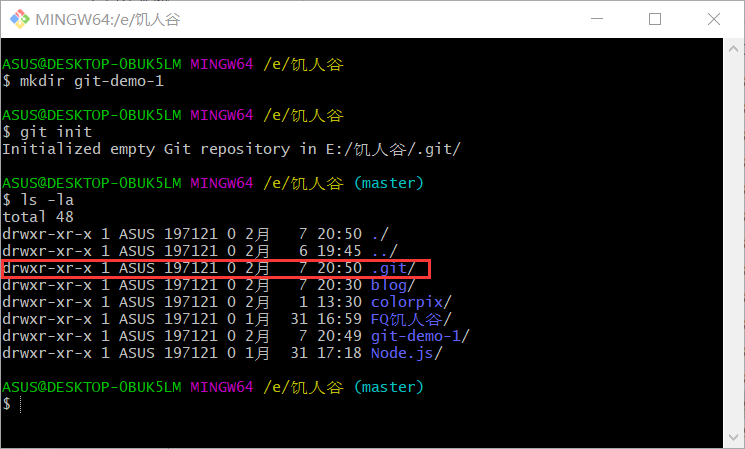
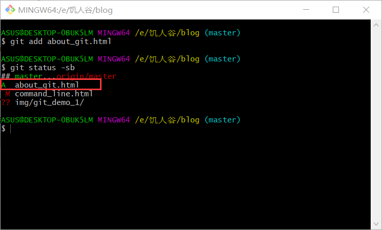
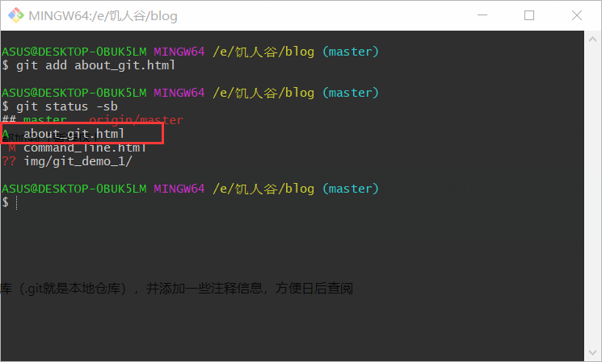

当我们建立好一个文件后，对文件进行初始化，这句命令会在 git-demo-1 里创建一个 .git 目录，如下图所示：

使用 git add 将文件添加到「暂存区」。此时我在该目录下创建了一个html文档，about_git.html，将改文件添加到「暂存区」
执行命令git add about-git.html，如下图所示：

当执行git status -sb时，about_git.html前的??变为了A，如下图所示：

使用 git commit -v 进入vim 输入message后退出可将文件提交到本地仓库。
-v 是显示有哪些更改的。